⚡
BidFlow
TENDER COMMAND CENTER
User Manual
Everything your team needs to manage tenders, PQQs and proposals in BidFlow —
from signing in and tracking live bids, to team notifications, change history and Excel import / export.
Version 1.0 · June 2026 · SATCO Business Development
All amounts are shown in SAR. The dashboard is the source of truth — Excel is an import/export output.
Contents
- Welcome — what BidFlow is
- Signing in & your account
- Home dashboard
- Command Center (pipeline board)
- Opportunities table — edit, filter, saved views
- The opportunity page
- Important changes — notifying the team
- Closing an opportunity — the reason is required
- Change History — who changed what, when
- Excel Sync — CSV & styled Excel
- Calendar & reminders
- Users, roles & permissions (Admin)
- Notification rules (Admin)
- Quick reference & FAQ
Getting started
01Welcome — what BidFlow is
BidFlow Tracker replaces the shared Excel proposal tracker with one live workspace for the whole
BD team. Every opportunity — bid, PQQ, RFQ, EOI — lives on the dashboard, moves through the pipeline,
and is edited by the team in real time. Excel hasn’t gone away: you can export a ready-made tracker
(CSV or the styled SATCO template) at any time, and import one back in.
The pipeline
Every opportunity has a status that places it in one of these stages:
New Lead → To Qualify → Live PQQ/RFQ → Live Bid → Submitted → Negotiation → Awarded / Closed-Lost / Postponed
The golden rules
- The dashboard is the source of truth. Everything you edit is saved instantly to the database.
- Every change is recorded. Change History shows who changed what, when, and old → new values.
- Important changes ask before saving. Deadline, status and bond changes prompt you to notify the team.
- Closing always needs a reason. You cannot close, cancel or postpone a bid without saying why.
- All money is SAR.
Tip — Press Ctrl + K anywhere to search, or N to add a new opportunity.
Getting started
02Signing in & your account
Open the BidFlow web address. If you are not signed in, you will see the sign-in screen.
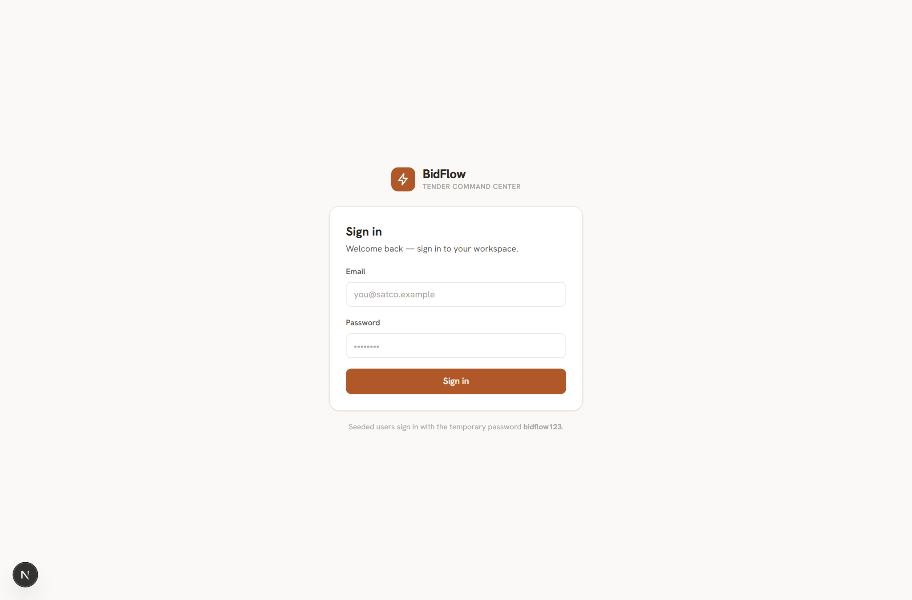
- Enter your work email (e.g.
layla.haddad@satco.example).
- Enter your password. New accounts start with the temporary password
bidflow123.
- Click Sign in. You land on your Home dashboard, greeted by name.
Signing out
Click the sign-out icon next to your name at the bottom of the left sidebar.
Important — ask your Admin to change your temporary password after your first sign-in
(Settings → Users → your row → set a new password).
Daily work
03Home dashboard
Home is your morning briefing: how many bids are live, what is due this week, what needs chasing.
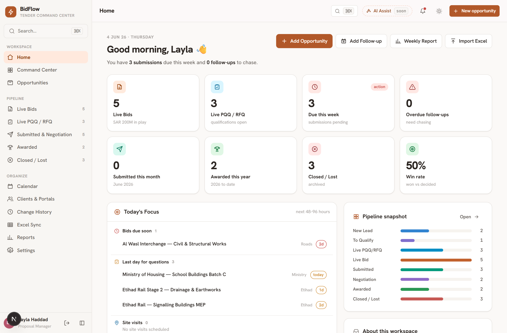
- KPI cards — Live Bids (with SAR pipeline value), Live PQQ/RFQ, Due this week, Overdue follow-ups, Submitted this month, Awarded this year, Closed/Lost, Win rate. Click any card to open that list.
- Today’s Focus — bids due soon, last day for questions, upcoming site visits.
- Pipeline snapshot — count of opportunities per stage; click Open for the board.
- Quick buttons — Add Opportunity, Add Follow-up, Weekly Report, Import Excel.
Daily work
04Command Center (pipeline board)
The board shows every opportunity as a card in its pipeline stage — like a Kanban board for tenders.
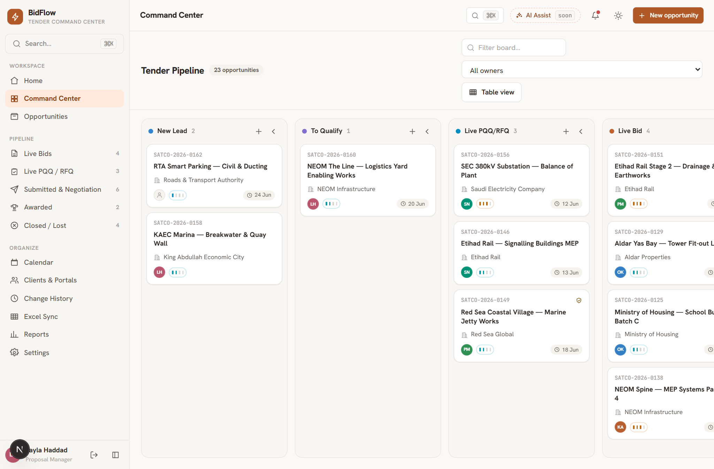
- Drag a card to another column to change its status.
- Dragging into Closed / Lost asks for a closing reason first (see section 08).
- Important moves (e.g. into Submitted or Awarded) ask whether to notify the team (see section 07).
- Click a card to open the full opportunity page.
Daily work
05Opportunities table — edit, filter, saved views
The master list of every opportunity, modelled on the old Excel tracker — but live and shared.
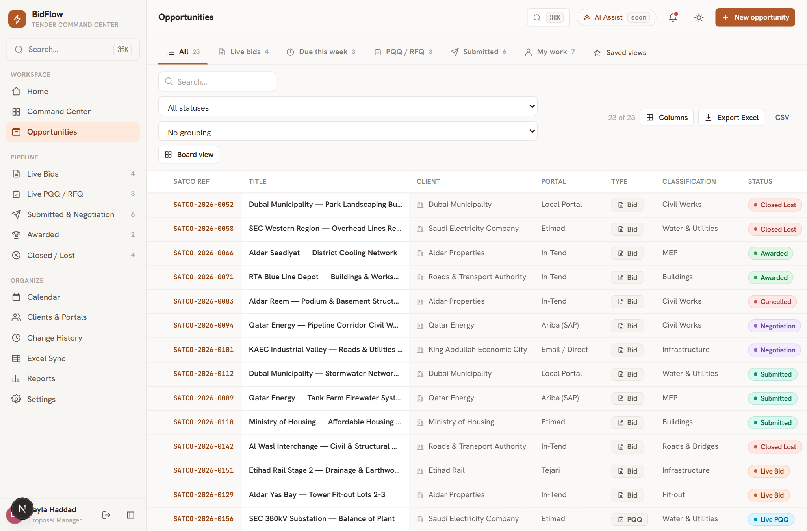
Editing directly in the table
- Click any cell (status, priority, owner, dates, value…) to edit it in place.
- Pick or type the new value — it saves the moment you leave the cell.
- Open the full page by clicking the SATCO Ref or the title.
Finding things
- View tabs — All, Live bids, Due this week, PQQ/RFQ, Submitted, My work (only opportunities you own).
- Search by title, reference or client; filter by status; group by status / client / owner / classification.
- Columns menu — show or hide any column.
Saved views
- Set up the filters, grouping, sorting and columns you like.
- Click Saved views → type a name → Save.
- Your view is stored to your account — reopen it any time from the same menu, on any device.
Daily work
06The opportunity page
One page with everything about a tender. Click any value to edit it — there is no separate edit mode.
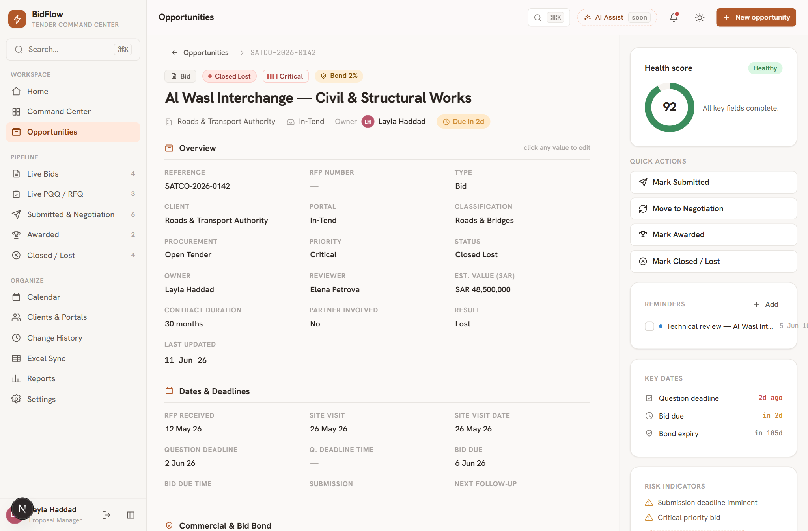
- Overview — reference, client, portal, classification, status, owner, reviewer, value (SAR), partner.
- Dates & Deadlines — RFP received, site visit, question deadline, bid due (+ time), submission, follow-ups.
- Commercial & Bid Bond — bond required, %, validity days, expiry date.
- Documents & Links — links to the RFP package, BOQ, proposals (files stay in your folders).
- Activity & Changes — this opportunity’s own change history.
Right-hand panel
- Health score — flags missing key fields (owner, reviewer, bid due, value…).
- Quick actions — Mark Submitted · Move to Negotiation · Mark Awarded · Mark Closed/Lost.
- Reminders & key dates — add reminders that also appear on the Calendar.
- Risk indicators — automatic warnings (deadline imminent, no owner, bond missing…).
Tip — to add a brand-new opportunity press N, or click + New opportunity (top-right). The form covers all tracker fields; the reference number is auto-generated if you leave it blank.
Team workflow
07Important changes — notifying the team
Some edits matter to everyone: bid due dates, question deadlines, status moves to Submitted / Awarded /
Closed, results, and bid-bond changes. When you make one, BidFlow asks before saving:
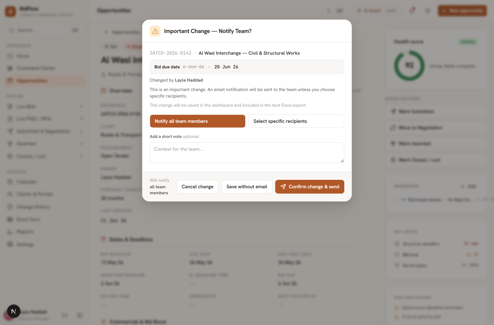
- Check the summary — it shows exactly what changes, old → new.
- Notify all team members is selected by default. Or choose Select specific recipients and tick people (grouped by team).
- Optionally add a short note for context.
- Click Confirm change & send — the change is saved and the email goes out.
- Or click Cancel change — nothing is saved and no email is sent.
Some changes also offer Save without email (your Admin controls which — see section 13).
Normal edits (notes, portal, classification…) never show this dialog; they just save.
Tip — the change is always included in the next Excel export, and the email status
(sent / to whom) is recorded in Change History.
Team workflow
08Closing an opportunity — the reason is required
Whenever a bid is moved to Closed Lost, Cancelled, No-Go or Postponed — from the table, the page,
the quick actions or the board — BidFlow asks for the real reason first:
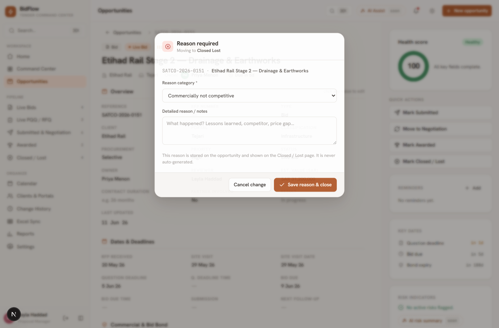
- Pick a reason category (Commercially not competitive, Lost to competitor, Client cancelled, …).
- Add notes — lessons learned, the competitor, the price gap.
- Click Save reason & close. (Closing is an important change, so the notify dialog follows.)
The stored reason then shows on the Closed / Lost page — hover for the notes:
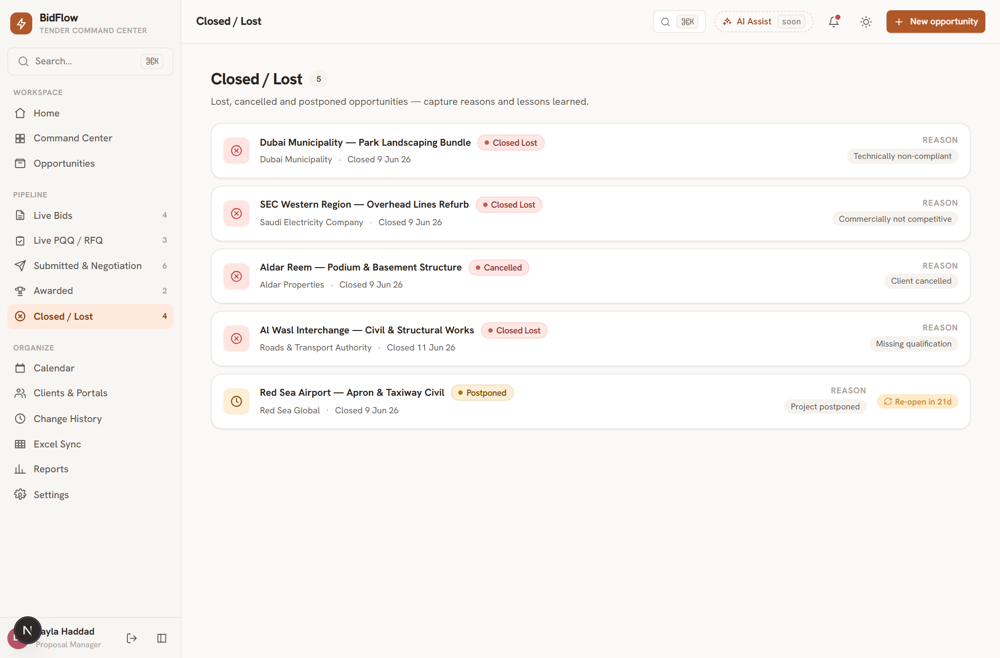
Tip — Admins can edit the list of reason categories under Settings → Lists → Closed / Lost reasons.
Team workflow
09Change History — who changed what, when
Open Change History in the sidebar for the full audit trail, written in plain language —
e.g. “Layla Haddad changed Status from Live Bid to Submitted for SATCO-2026-0142.”
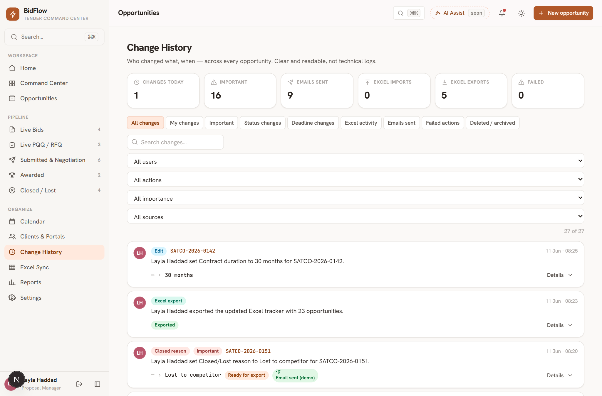
- Summary cards — changes today, important changes, emails sent, Excel imports/exports, failed actions.
- View tabs — All · My changes · Important · Status changes · Deadline changes · Excel activity · Emails sent · Failed · Deleted/archived.
- Filters — search, user, action type, importance, source.
- Each entry shows the old → new value, badges for Email sent and Ready for export, and a Details drawer (recipients, notes).
- Click the reference to jump to the opportunity — its own page shows the same timeline under Activity & Changes.
Excel
10Excel Sync — CSV & styled Excel
Open Excel Sync in the sidebar. The dashboard stays the source of truth; here you move data in and out.
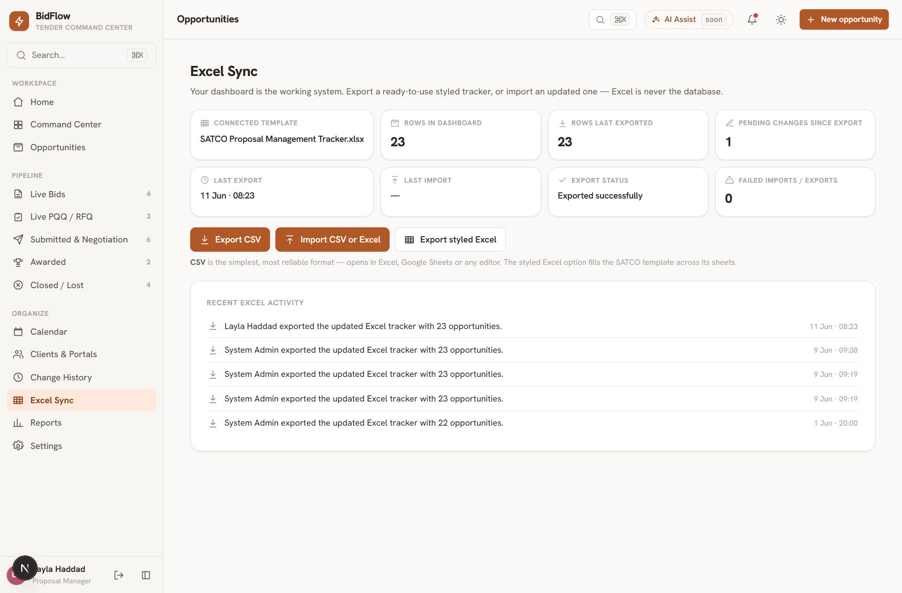
Exporting
- Export CSV (recommended) — one clean file with every opportunity. Opens perfectly in Excel and Google Sheets. Values in SAR, people and clients by name.
- Export styled Excel — fills the official SATCO tracker template: Live Bids, Live PQQ, Submitted Bid-Negotiation, Closed Bids, Awarded Bids, Submitted PQQs and RFQs — colours and formatting preserved. Each opportunity lands on the right sheet automatically.
Importing
- Click Import CSV or Excel and choose your file (.csv or .xlsx).
- Review the preview: rows marked New or Update, with counts and “Needs review” warnings (e.g. an unknown client name). Nothing is changed yet.
- Click Apply import to bring the data in — or Cancel to discard everything.
The status cards show rows in the dashboard, last export/import time, and pending changes since the last
export — so you always know if your Excel copy is stale.
Tip — rows are matched by SATCO Reference: same reference = update, new reference = new opportunity.
Daily work
11Calendar & reminders
The Calendar shows every deadline (bid due, question deadline, site visits, bond expiry) plus your own reminders.
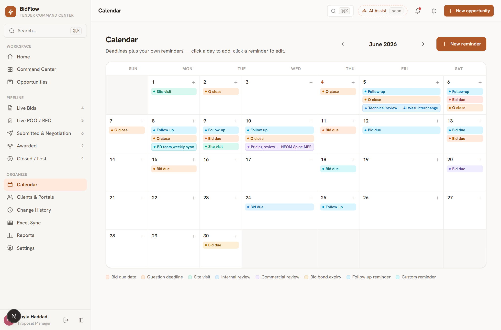
- Click a day to add a reminder — pick a type, time and (optionally) link it to an opportunity.
- Click an existing reminder to edit or complete it.
- Reminders linked to an opportunity also show on that opportunity’s page.
Administration
12Users, roles & permissions (Admin)
Admins manage the team under Settings → Manage users.
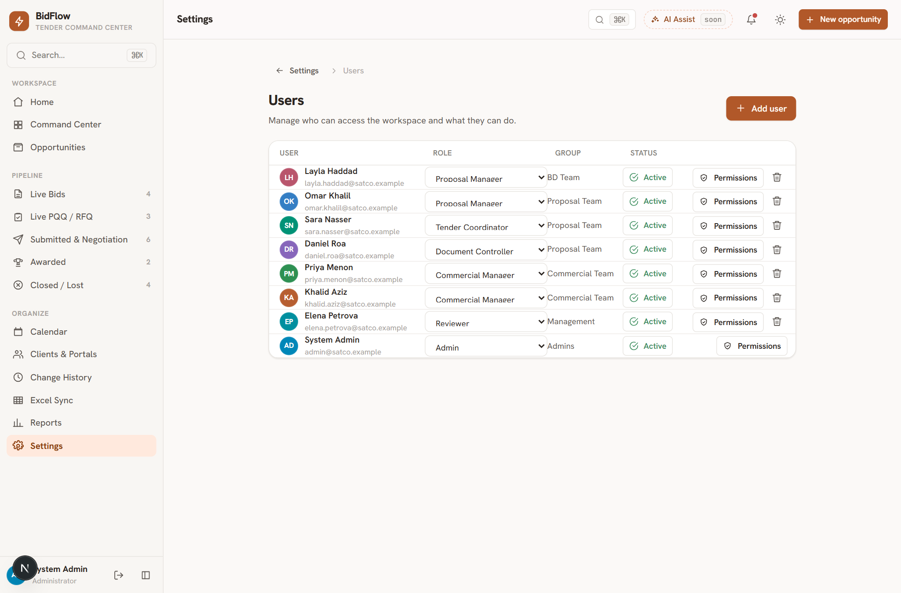
- Add user — name, email, role, team group and a temporary password.
- Change a user’s role from the dropdown — their access updates immediately.
- Toggle Active / Disabled to suspend access without deleting the account.
Custom permissions per person
Click Permissions on any row to fine-tune a single person beyond their role:
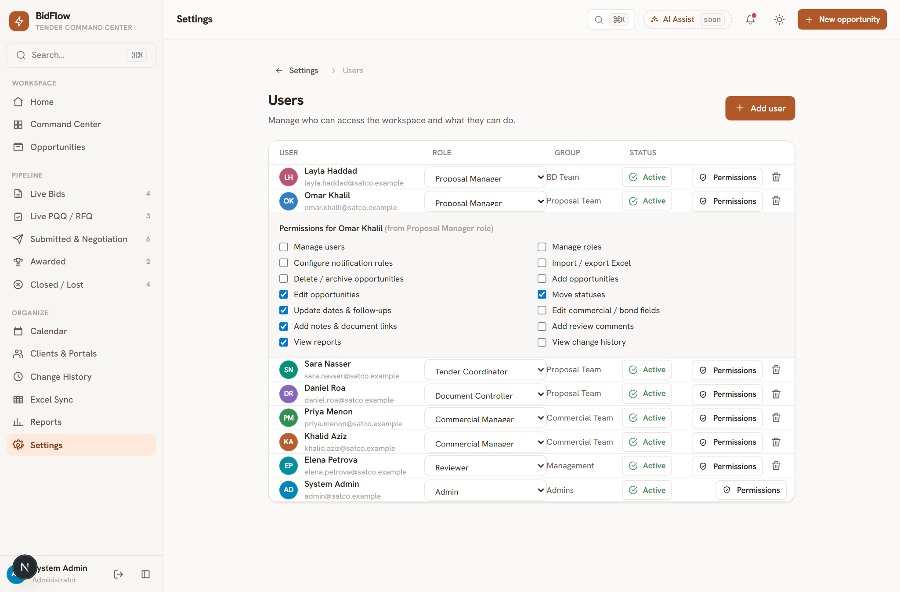
- Tick or untick any of the 14 permissions (delete/archive, import/export, manage users, edit commercial…).
- The button shows Custom when overridden; Reset to role returns to the role’s defaults.
- Admins always keep full access.
Roles
Settings → Roles & permissions shows the full matrix: Admin, BD Manager, Proposal Manager,
Tender Coordinator, Document Controller, Commercial Manager, Finance, Management Viewer, Reviewer.
Administration
13Notification rules (Admin)
Settings → Notifications → Configure major-change notification rules controls which edits open the
“Important Change — Notify Team?” dialog.
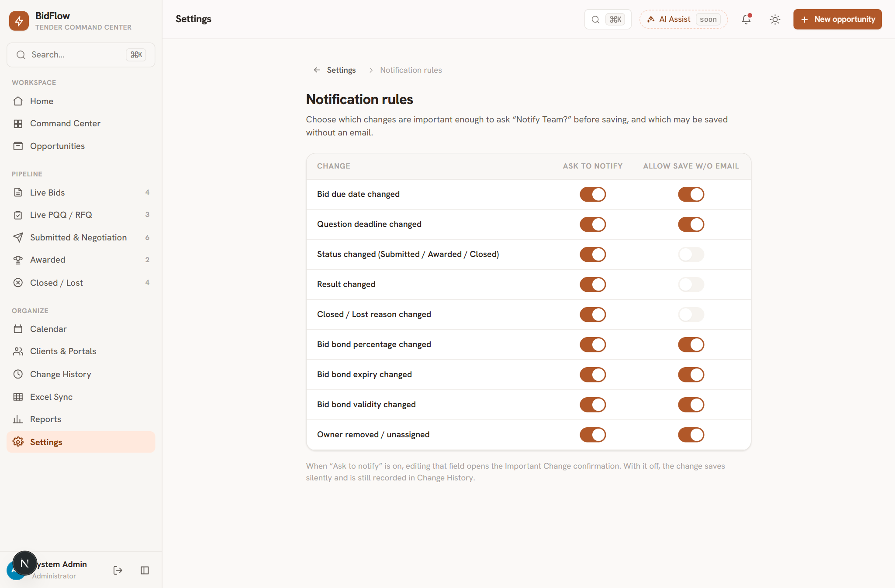
- Ask to notify — on: editing that field opens the notify dialog. Off: it saves silently (still recorded in Change History).
- Allow save w/o email — adds the “Save without email” button to the dialog for that field.
Reference
14Quick reference & FAQ
I want to… → do this
| I want to… | Do this |
|---|
| Add a new tender / PQQ | Press N or click + New opportunity |
| Change a deadline | Click the date on the table or the opportunity page → confirm the notify dialog |
| Move a bid to Submitted | Quick action Mark Submitted, or drag the card, or edit Status |
| Close a lost bid | Mark Closed / Lost → choose the reason → confirm |
| See who changed something | Sidebar → Change History (or the opportunity’s Activity & Changes) |
| Get the tracker as Excel | Sidebar → Excel Sync → Export CSV or Export styled Excel |
| Bring an updated tracker in | Excel Sync → Import CSV or Excel → review preview → Apply |
| Save my favourite filters | Opportunities → Saved views → name → Save |
| Add a teammate | (Admin) Settings → Manage users → Add user |
| Edit dropdown options | (Admin) Settings → Lists (portals, classifications, reasons…) |
FAQ
Did my edit save? Yes — edits save the moment you leave the field and a toast confirms it. Important
changes save only after you confirm the dialog; cancelling saves nothing.
Why am I asked for a reason when closing? So the Closed/Lost page and reports always show the real,
recorded reason — it is never guessed or auto-generated.
Why did a dialog appear for my edit? The field is marked “important” in the notification rules.
Confirm to save and notify, or cancel to discard.
Are the notification emails real? They are recorded and shown as “Sent (demo)” until the email
service is connected by your administrator. Everything else works the same.
Can I break the Excel template? No — the export fills a fresh copy of the official template every
time. Your dashboard data is never affected by exporting.
I can’t see the Delete button. Your role doesn’t have the delete/archive permission — ask an Admin.
Keyboard shortcuts — Ctrl + K search everything ·
N new opportunity · Esc close any dialog.